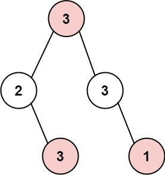

337. 打家劫舍 III
树形 DP 后序遍历：每个结点返回「偷它 / 不偷它」两种最大收益，父亲据此决定偷不偷。
思路
- 后序遍历：先拿左右孩子的
(偷, 不偷)二元组，再合成当前结点的二元组返回。 - 偷当前：两个直接儿子必须空着，收益 =
val + 左[不偷] + 右[不偷]。 - 不偷当前：儿子偷不偷随意，收益 =
max(左偷, 左不偷) + max(右偷, 右不偷)。 - 空结点返回
(0, 0)；答案取根的两种情况较大者。 - 一趟 O(n)，比「记忆化 + 重复讨论父子状态」省事得多。
图解
最优解
1class Solution {2 public int rob(TreeNode root) {3 int[] t = dfs(root);4 // 根偷不偷都行，取大的5 return Math.max(t[0], t[1]);6 }7 8 // 返回 [偷 node 的最大收益, 不偷 node 的最大收益]9 private int[] dfs(TreeNode node) {10 if (node == null) return new int[2];11 int[] l = dfs(node.left), r = dfs(node.right);12 // 偷当前：两个直接儿子必须空着13 int yes = node.val + l[1] + r[1];14 // 不偷当前：儿子偷不偷随意，各取大的15 int no = Math.max(l[0], l[1]) + Math.max(r[0], r[1]);16 return new int[]{yes, no};17 }18}题目
小偷又发现了一个新的可行窃的地区。这个地区只有一个入口，我们称之为 root 。
除了 root 之外，每栋房子有且只有一个“父“房子与之相连。一番侦察之后，聪明的小偷意识到“这个地方的所有房屋的排列类似于一棵二叉树”。 如果 两个直接相连的房子在同一天晚上被打劫 ，房屋将自动报警。
给定二叉树的 root 。返回 在不触动警报的情况下 ，小偷能够盗取的最高金额 。
示例 1:

输入: root = [3,2,3,null,3,null,1] 输出: 7 解释: 小偷一晚能够盗取的最高金额 3 + 3 + 1 = 7
示例 2:

输入: root = [3,4,5,1,3,null,1] 输出: 9 解释: 小偷一晚能够盗取的最高金额 4 + 5 = 9
提示：
- 树的节点数在
[1, 104]范围内 0 <= Node.val <= 104
题面取自力扣当前版本。
数据快照 2026-11-04。题面版权归力扣所有，本站点仅供本人学习使用，请勿对外发布。